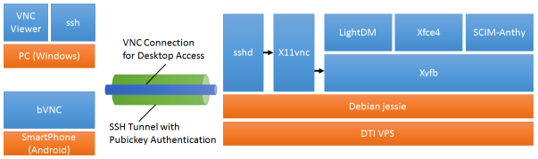

DTIのVPS上にデスクトップ環境を作るという試み
普段、会社で提供されているVDI (仮想デスクトップ) の環境を使って 仕事をしている。もうかれこれ2年以上が過ぎた。
時々画面のレスポンスがアレな時があるけど、この環境、とても気に入っている。 いつ、どこにいてもデスクトップにアクセスできるし、何より前に作業して いた状態をそのまま引き継いで使えるところが特にいい。
Linxuのデスクトップ環境でも作っておくか、と思い立ったので、ついでに VDIっぽく仕立ててみた。その手順をまとめておく。
作るデスクトップ環境のイメージ
基本的な方針を「できるだけコンパクトに、できるだけ少ない手順で、 Linuxの環境を作る」としてやってみた。
作るデスクトップ環境のイメージは次のとおり。
- VNCを使ったデスクトップアクセス
- 認証はSSHで公開鍵認証
- LightDM + Xfce4 のデスクトップ
- SCIM Anthy で日本語入力
- VNCを切断しても再接続すれば切断前の状態から再開
特に 5. の特徴は重要。
構成
大まかな構成は下図のとおり。
- VPSにはディスプレイが無いので、Xvfb (仮想フレームバッファ) を使って X を起動。
- Xvfb上でデスクトップ環境を実行したままにする。
- X11vncをVNCのサーバとし、Xvfbにアタッチすることで、実行中の デスクトップ環境へのVNCアクセスを実現。
- 認証はSSHの公開鍵認証を利用。
- SSHのポートフォワーディング使うことで、VNCセッションの認証と 暗号化を実施。
- WindowsとAndroidを使ってデスクトップへアクセス。
VPSをセットアップ
今回もDTIのServersMan@VPSのDebianの環境を使う。 先のエントリに書いた手順で、Debian jessieの環境にする。
日本語ロケールへ切り替える
$ sudo localedef -i ja_JP -f UTF-8 ja_JP.UTF-8
$ sudo update-locale LANG=ja_JP.UTF-8
設定後に再起動をしておく。
$ sudo shutdown -r now
デスクトップ関係のパッケージをインストール
$ sudo apt install fonts-ipafont
$ sudo apt install lightdm
$ sudo apt install xfce4 xfce4-terminal scim-anthy
$ sudo apt install xvfb
$ sudo apt install x11vnc
LightDMをXvfb上で動作するように構成
/etc/lightdm/Xvfb.sh として次のファイルを作る。 用意するデスクトップのサイズと色数は、1024x768x24のところで指定している。
#! /bin/sh
exec /usr/bin/Xvfb -screen 0 1024x768x24 -nolisten tcp
パーミッション等を調整。
$ sudo chown root:root /etc/lightdm/Xvfb.sh
$ sudo chmod 755 /etc/lightdm/Xvfb.sh
/etc/lightdm/lightdm.conf の [SeatDefaults] セクションの xserver-command を設定する。
[SeatDefaults]
xserver-command=/etc/lightdm/Xvfb.sh
LightDMを再起動する。
$ sudo /etc/init.d/lightdm restart
X11vncの設定
/etc/init.d/x11vnc として自動起動スクリプトを作る。 このスクリプトは、このサイト [1] に投稿されているものをベースに、 実際はx11vncはpidファイルを作らないので、その辺を修正したもの。
#! /bin/sh
### BEGIN INIT INFO
# Provides: x11vnc
# Required-Start: $syslog $local_fs lightdm
# Required-Stop: $syslog $local_fs
# Default-Start: 2 3 4 5
# Default-Stop: 0 1 6
# Short-Description: x11vnc
# Description: x11vnc
### END INIT INFO
DAEMON=/usr/bin/x11vnc
test -x $DAEMON || exit 0
DAEMON_OPTS="-loop -reopen -shared -auth /var/run/lightdm/root/:0 -logappend /var/log/x11vnc.log -localhost -rfbport 5900 -rfbportv6 -1 -repeat"
NAME=x11vnc
DESC=X11vnc
set -e
case "$1" in
start)
echo -n "Starting $DESC: "
start-stop-daemon -b --start --quiet --exec $DAEMON -- $DAEMON_OPTS
echo "$NAME."
;;
stop)
echo -n "Stopping $DESC: "
start-stop-daemon --stop --oknodo --quiet --exec $DAEMON
echo "$NAME."
;;
restart)
echo -n "Restarting $DESC: "
start-stop-daemon --stop --oknodo --quiet --exec $DAEMON
sleep 1
start-stop-daemon -b --start --quiet --exec $DAEMON -- $DAEMON_OPTS
echo "$NAME."
;;
*)
N=/etc/init.d/$NAME
echo "Usage: $N {start|stop|restart}" >&2
exit 1
;;
esac
exit 0
パーミッション等を調整して、自動起動を設定する。
$ sudo chown root:root /etc/init.d/x11vnc
$ sudo chmod 755 /etc/init.d/x11vnc
$ sudo update-rc.d x11vnc defaults
X11vncを起動する。
$ sudo /etc/init.d/x11vnc start
X11vncの引数の解説
自動起動スクリプトのDAEMON_OPTSで設定されているx11vncのオプションについて 解説しておく。
| 引数 | 説明 |
|---|---|
| -loop | x11vncが停止したときも、新しいx11vncを起動して 動作し続ける。本来は-foreverで良いが、 クライアントを切断する際にx11vncが異常終了する ケースがあるため、-loopを使っている。 -loopを使うとx11vncはフォアグラウンドで動作する ので、起動スクリプトで start-stop-daemon の引数に -b をつけて対応している。 |
| -reopen | Xvfbが停止したときに、再接続をする。 デスクトップからログアウトした後、 LightDMへ移るときにXvfbも再起動されることに ことに対応するもの。 |
| -shared | 複数の同時接続を許可する。複数のデバイスを使い 分けるときとか、Androidで通信方式が3G/4G/WiFi で切替わったときに、前のセッションが残っていて 繋がらないで困らないようにする。 |
| -auth /var/run/lightdm/root/:0 | LightDMが起動したXvfbへ接続する。 |
| -logappned /var/log/x11vnc.log | ログファイルを/var/log/x11vnc.logへ出力する。 |
| -localhost | TCPの接続待受けについて、localhostだけでの LISTENに制限する。 |
| -rfbport 5900 -rfbportv6 -1 | -localhostの設定がIPv4にしか効かないため、 そのワークアラウンド。このあたり [2] を 参考に。 |
| -repeat | VNCクライアントで接続をした際にキーリピートが 使えるようにする。 |
ログファイルのローテーションを設定する
/etc/logrotate.d/x11vnc として次のファイルを作る。
/var/log/x11vnc.log {
daily
rotate 14
delaycompress
compress
notifempty
missingok
postrotate
/etc/init.d/x11vnc restart > /dev/null
endscript
}
再起動して完成
$ sudo shutdown -r now